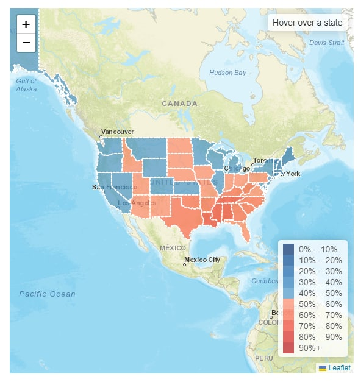
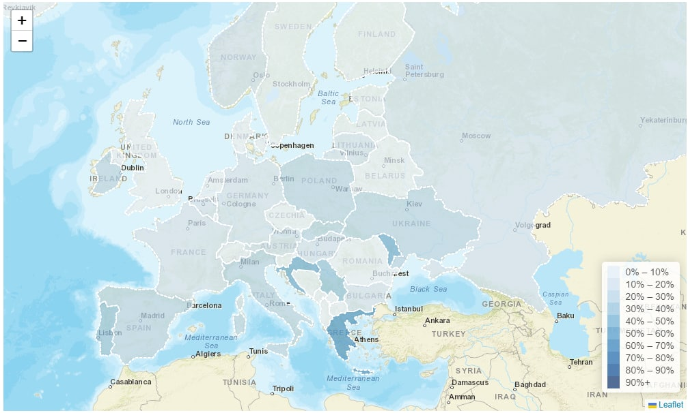

To view the presentation slides for Milestone 2, please click
here.
Our chosen visualization to improved upon for Milestone 2.

Source: reddit.com/r/dataisbeautiful/comments/vfrqow/percent_of_people_who_responded_that_religion_is
Data (What):
- Our dataset consist of the Population for EU and US, and the Religion Importance % for the US states and EU countries.
- Quantitative data: Population and religion importance %
- Qualitative data: States/Countries
Task (Why):
- The visualization is to show the importance of religion for each state/countries of the US or EU to allow users to analyze in which state/countries where the population consider religion to be of importance or not important.
Idiom (How):
- The idiom is a choropleth map. The first tab is the map showing the different states in the United States (US). The second tab is the map showing the different countries in the European Union (EU). The third tab has both the US and EU maps side-by-side, for comparison of the data.
- 0% - 50%: Dark Blue - Light blue
- 50% - 100%: Light Red - Dark red
- Using a default light to dark gradient does not helps the user to visualize the difference well as the light gradient blend into the leaflet map making it difficult to see. Hence, using dark colour for both end of the range spectrum helps to visualize the difference more distinctly.
 
Design Principle:
- Brief Overview:
- Gradient of colour in the map shows the states/countries with lower/higher religious population
- Zoom:
- Zoom in/out for more details on the states/countries
- Legend:
- Distinguish between high/low importance of religion
- Tooltip:
- Display additional information on mouse hover
Pitfalls:
- Dataset is of different years where US is 2014 and EU is 2018
- EU Dataset for importance of religion does not contain sample size count
- Initially, tried SVG for the comparison of both map but decided that Leaflet is more consistent in visualization flow.
Technologies used:
Work Contribution:
- Wong Yao Hui
- Data Preprocessing
- Leaflet template map for US, EU
- SVG Map (Not implemented)
- Integration
- Presentation/Documentation
- Ng Jing Kiat
- Data Preprocessing
- Leaflet choropleth map
- Leaflet Legend + highlight
- Integration
- Presentation/Documentation
- Marsius
- Data Preprocessing
- Leaflet Tooltip
- Integration
- Presentation/Documentation
Future Work:
- Resolve tooltip bug that display twice during hover on US & EU map